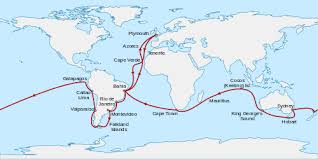
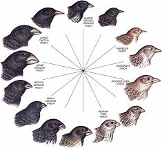
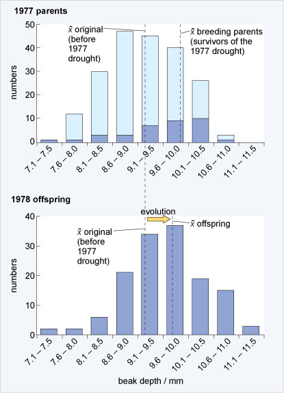
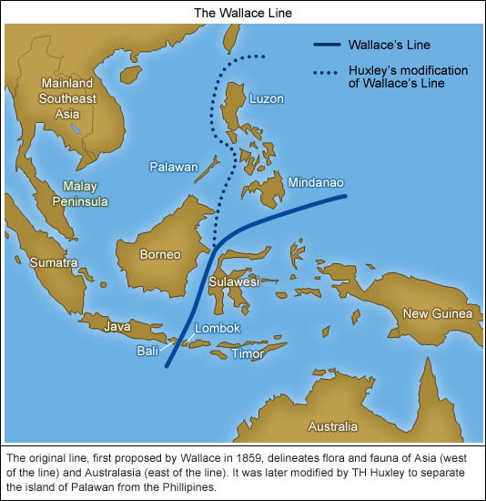
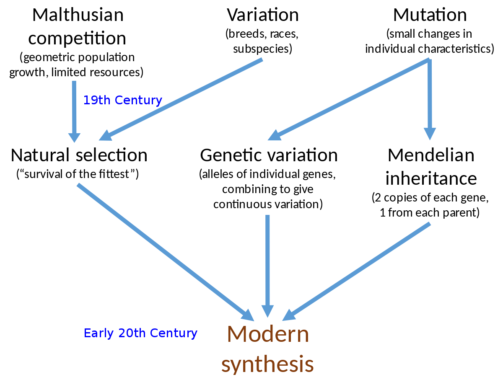

Evolution
Models
- Conflict Model
- Independence Model
History of evolutionary thought
- Aristole
- Earlies recorded evolutions
- Early non-creationis view
- Spontaneous generation
- Georges Cuvier(1769-1832)
- Founding father of paleontology
- Founding different groupins of organsims in each stratum (pla. strat) of rock
- Geologic epochs
- Jean-Baptiese Pierre Antoine de Monet chelavier del Lamarck
- Published his theories in 1809
- Use the disuse of organs
- Inheritance of "gained traits"
- Charles Darwin (1809-1882)
- Studied to be a physician, then a minister
- Became a traveling naturalist
- Influenced by lamarck and charles Lyell
- Voyage of the Beagles ( also Galapagos Islands)

- Thomas Robert Malthus
- Scholar of economy and demography
- "Essay on the priciple of population"
- Natural Selection
- Limited Resources
- Variable survivability
- Variable survivability & production of offspring is tied to what traits you have
- The variable traits that results in the variable success are passed on to offspring
- A greater proportion of the next generation will exhibit successful traits

- Darwins's Hypothesis
- Evolution = descent with modification
- Recent evidence for Galapagos Finches: 1977 drought

- Modification occurs within populations
- Variable traits correlate with variable success
- Variation seen in a population is heritable
- Descent was from a common ancestor
- Alfred Russel Wallace
- Sends Darwin his independently written theory of natural selection
- Uses biogeography as support for evolution:

- Lulian Huxley
- The Modern Sythesis, also called Neo-Darwinian theory

Genetics
Why do organisms show variablility to begin with? Why is there still variablility in populations?
Evolution
- Change in inherited characteristics of a population from generation to genereation
- Change in gene frequencies of a population from generation to genereation
- Populations, not individuals